Third-year student of Shujin Academy and heiress to a conflomerate.
She rises to avenge her father.
EMPRESS ARCANA SKILLS
EMPRESS ARCANA PERSONAS
EMPRESS ARCANA SKILLS
| Rank | Name | Effect |
|---|---|---|
| 1 | Cultivation | Cultivate vegetables with Haru on the Shujin Academy rooftop |
| 2 | - | - |
| 3 | Follow Up | Chance to perform a follow-up attack if Joker’s attack does not down the enemy. |
| 4 | Celebrity talk | If negotiations amidst a group of Shadows fails, you can try again. |
| 5 | Bumper Crop | Increases the total vegetable yield for a single harvest. |
| 6 | Harisen Recovery | Chance to cure status ailments inflicted upon party members. |
| 7 | Soil Improvement | Decreases the total amount of time it takes to cultivate vegetables. |
| 8 | Endure | Chance to withstand an otherwise fatal attack with 1 HP remaining. |
| 9 | Protect | Chance to shield Joker from an otherwise fatal attack. |
| 10 | Second Awakening |
Haru’s Persona, Milady, transforms into Astarte |
| 11 (P5R) | Third Awakening |
Astarte transforms into Lucy |
EMPRESS ARCANA PERSONAS
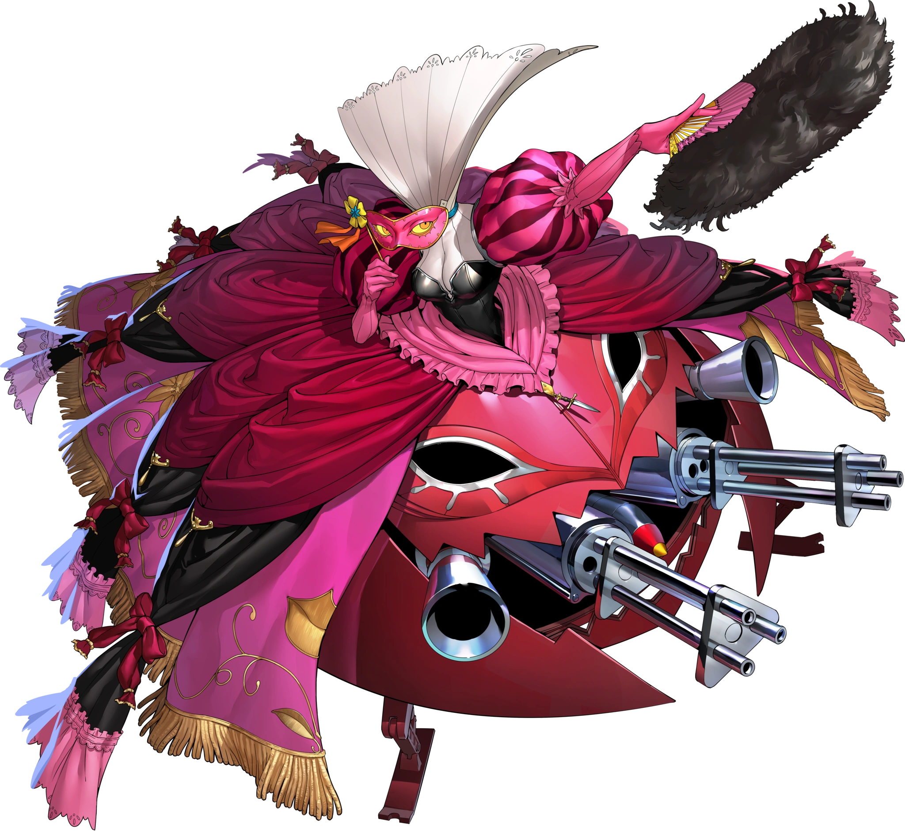 Milady
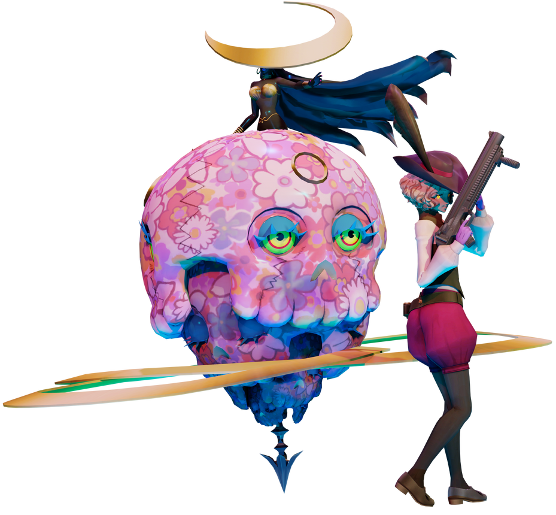 Astarte
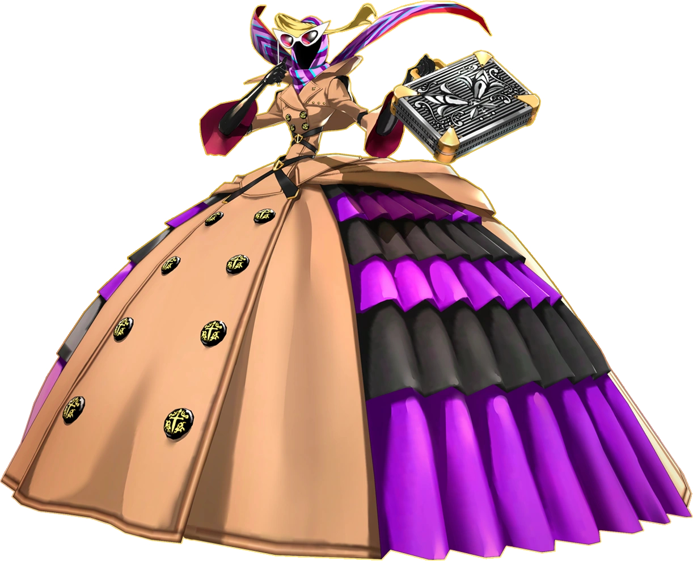 Lucy
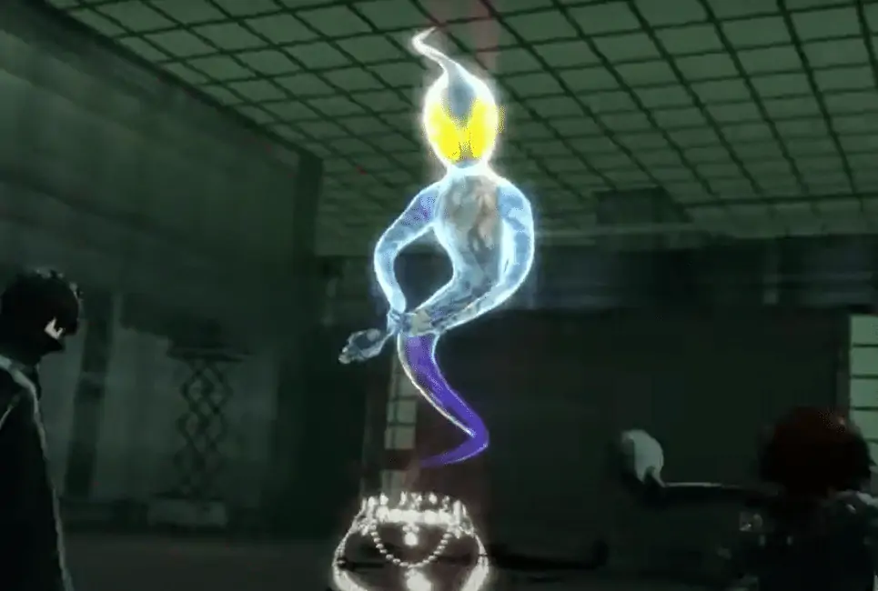 Queen's Necklace
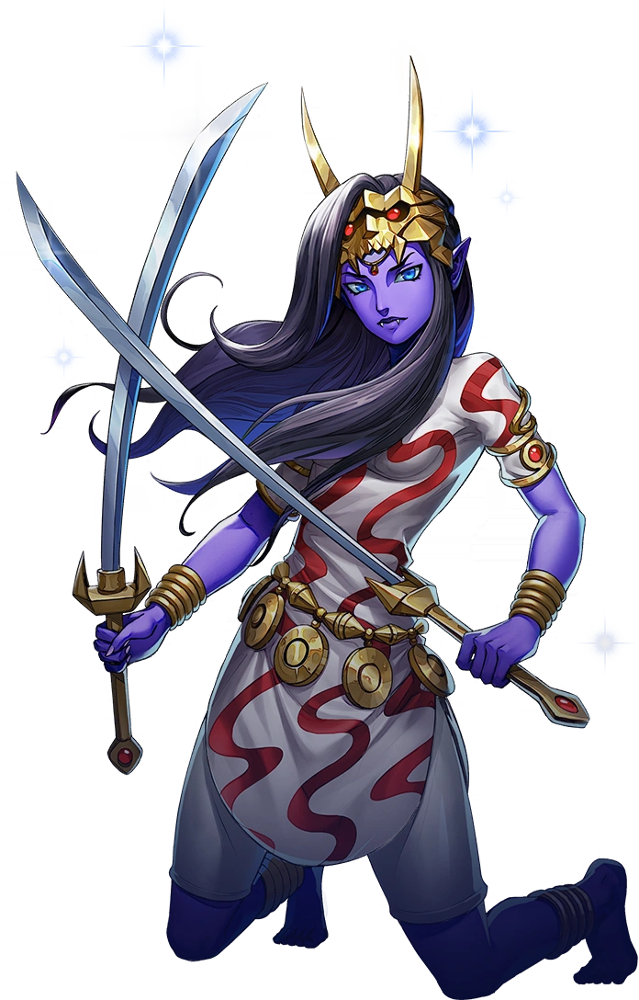 Yaksini
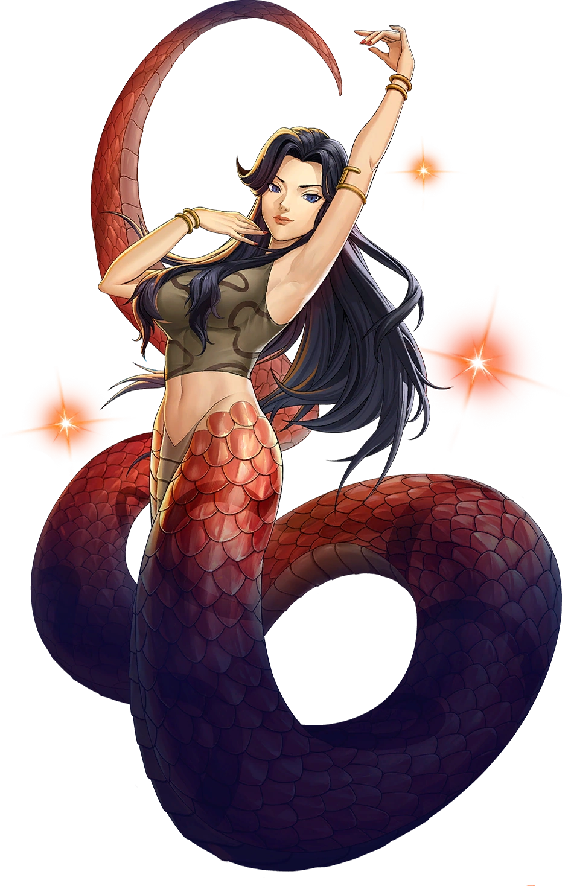 Lamia
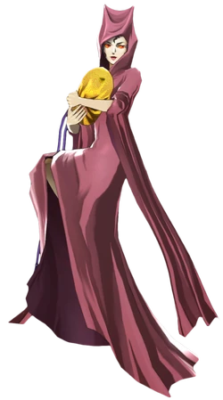 Hariti
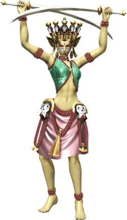 Dakini
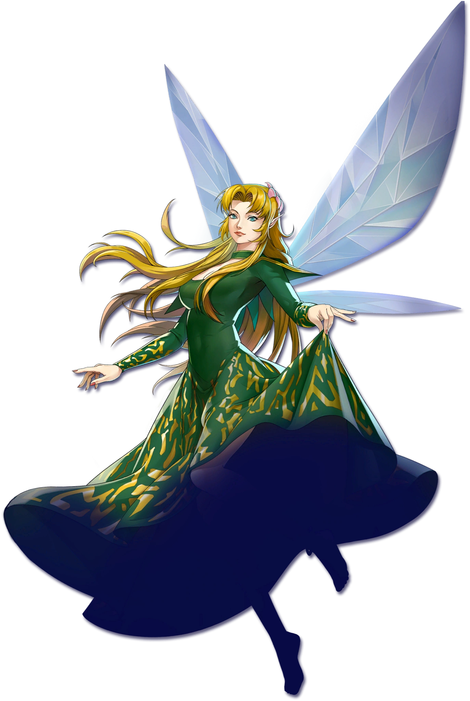 Titania
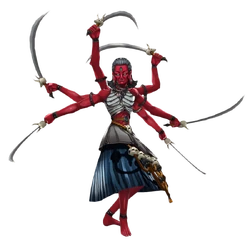 Kali 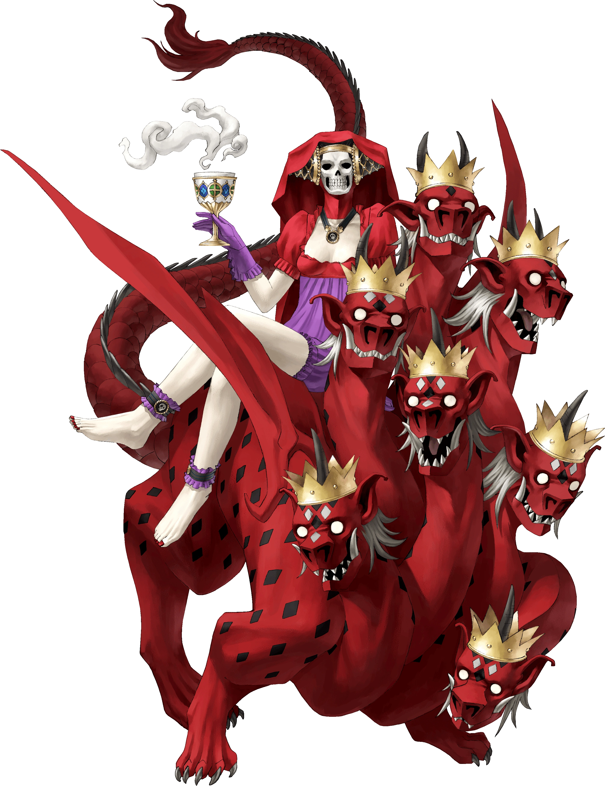 Mother Harlot 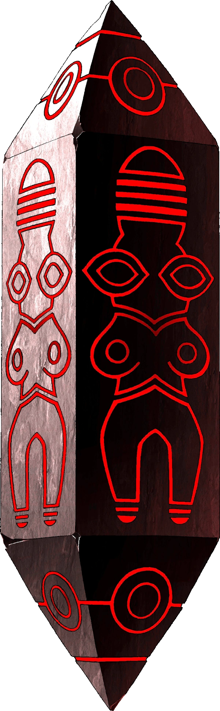 Alilat
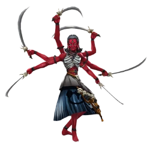 Kali 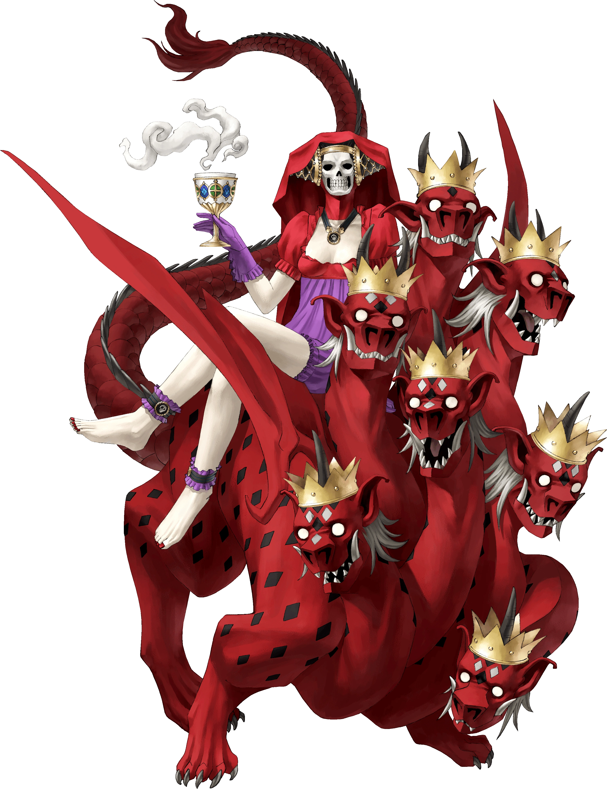 Mother Harlot 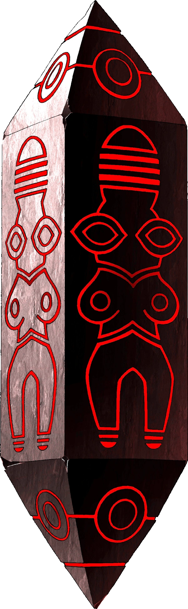 Alilat